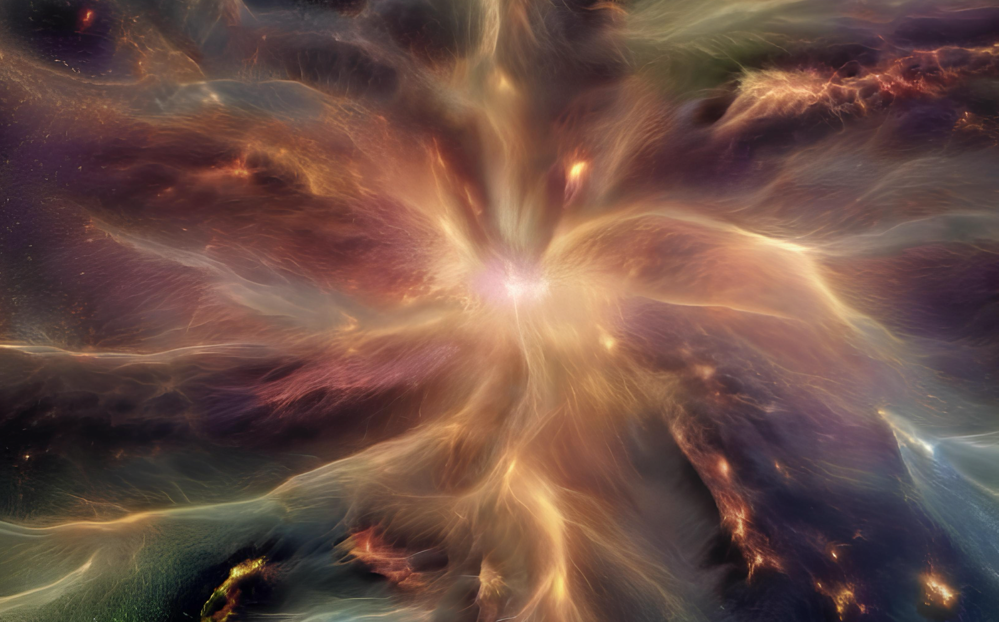
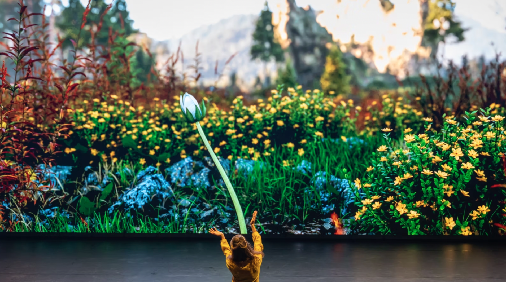

Gonçalo Guiomar | Artworks
Selected projects, installations, and live performances.

Archive
-
Axiom Casino 2026
TheaterAn algorithmic fiction set in a world where chance is never neutral. Through shifting rooms governed by machine logic, it explores control, ritual, and collective behavior, turning the casino into a theatrical machine for thinking about power, belief, and the systems that influence our actions. See the trailer here.

-
Atavic Forest 2 2026
Short FilmATA Festival, Zurich, Switzerland.

-
Surface Disorder 2025
InstallationPorto Municipal Gallery. Multi-agent AI system orchestrating light, sound, and narrative states in real time. I wrote a couple of essays featured in this book: The Bite and Gnosis Fracture.
-
Zangezi 2025
PerformanceImmersive performance developed with Chris Salter and the Immersive Arts Space (ZHdK); contribution focused on AI video systems.

-
Jezabel 2025
InstallationLisbon Fashion Week. AI-driven digital entity built from interviews and archives from fashion designers.
-
HHY & The Macumbas + Lunar Ring 2025
Live A/VLive audiovisual concert at Surface Disorder, Galeria Municipal do Porto.
-
HHY & The Macumbas + Lunar Ring 2024
Live A/VLive performance at Teatro Municipal Vila do Conde / Curtas Film Festival.
-
Latent Space 2024
Short FilmWhat will you hold on to when dreams become inseparable from reality?
-
Atavic Forest - Live Concert 2023
Live A/VMucho Flow Festival. 8-channel immersive projection and live-generated visuals.
-
Atavic Forest 2022
InstallationLatent Spaces at Champalimaud Foundation. Real-time traversable AI-generated environment.
-
Polylith 2021
InstallationMetamersion at Champalimaud Foundation. Interactive triptych for spatial sound and responsive visuals.